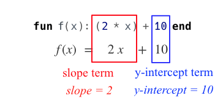

Defining Linear Functions
(Also available in WeScheme)
Students explore the concept of slope and y-intercept in linear relationships, using function definitions as a third representation (alongside tables and graphs).
|
Lesson Goals |
Students will be able to…
|
|
Student-facing Lesson Goals |
|
|
Materials |
|
|
Key Points for the Facilitator |
|
coordinate pair-
a set of numbers describing an object’s location on the coordinate plane
domain-
the type or set of inputs that a function expects
range-
the type or set of outputs that a function produces
slope-
the steepness of a straight line on a graph
y-intercept-
the point where a line or curve crosses the y-axis of a graph
| Defining Linear Functions | 35 minutes |
Overview
Students explore function definitions as a way of expressing linear relationships, and construct tables and graphs from those definitions.
Launch
As you’ve seen, a function definition is a way of summarizing a relationship. You’ve seen how a linear relationship can be expressed as a table or graph. But what do these kinds of relationships look like as a definition?
Linear functions are defined by their slope and y-intercept
Here we see a function definition written using pyret notation and using function notation.

{kind=link}
The slope-intercept form of the line includes the slope as the coefficient of x and the y-intercept as the numerical term. You will hear people describe this form as y = mx + b, where m stands for slope and b stands for the y-intercept.
While it is common to write the x-term first and the y-intercept second, they can be written in any order!
| Function Notation | Pyret Code |
|---|---|
|
fx = 6x - 10 |
|
|
fx = -10 + 6x |
|
When the slope is zero (and the line is horizontal)… we may choose whether or not to write the slope term.
| "Visible" Slope | "Invisible" Slope |
|---|---|
fx = 0x + 22 |
fx = 22 |
When the y-intercept is 0 (and the line crosses the y-axis at the origin)… we may choose whether or not to write the slope term.
| "Visible" y-intercept | "Invisible" y-intercept |
|---|---|
fx = 3.2x + 0 |
fx = 3.2x |
To check our work, we can apply the function to the x-value from any coordinate pair on our table or graph, and it should produce the y-value!
As with tables and graphs, a function definition can also reveal whether or not the function is linear. Functions that are not linear will follow other forms, for example they may include exponents or absolute values.
Investigate
Let’s start by identifying the slope and y-intercept from function definitions.
More practice is available through our Desmos card sort activities:
Let’s connect definitions to tables and graphs.
Writing down the slope and y-intercept beneath each representation will help!
More matching practice is available through our Desmos card sort activities.
Let’s write our own definitions from tables and graphs!
What strategies did you use?
Common Misconceptions
It is common to think of the graph as the "output" of the function, rather than the function itself. Most math textbooks will use language like "matching the graph to the function", suggesting that the graph is somehow not the function! Since this language is pervasive, it’s important to actively push against it.
Synthesize
Function definitions are a way of talking about relationships between quantities: milk costs $0.59/gallon, a stone falls at 9.8m/s^2, or there are 30 students for every teacher at a school. If we can figure out the relationship between a small sample of data, we can make predictions about what happens next. We can see these relationships as tables, graphs, or symbols in a definition. We can even think about them as a mapping between Domain and Range!
When we talk about functions, it’s helpful to be able to switch between representations, and see the connections between them.
| Finding the y-intercept from the Slope and a Point | 20 minutes |
Launch
Consider the function fx = 3x.
x |
0 |
1 |
2 |
3 |
y |
0 |
3 |
6 |
9 |
-
What is the slope?
-
3
-
-
What is the y-intercept?
-
0
-
-
What is the y-value when x = 2?
-
6
-
Anytime the y-intercept is 0, we can multiply any x-value by the slope to get its corresponding y-value.
But if the y-intercept isn’t zero… there is another step to finding the y-value.
Consider the function fx = 3x - 2.
x |
0 |
1 |
2 |
3 |
y |
-2 |
1 |
4 |
7 |
-
What is the slope?
-
3. Same as for the previous function.
-
-
What is the y-intercept?
-
-2
-
-
What is the y-value when x = 2?
-
4. Two less than the y-value for x=3 in the previous function, where the y-intercept was 0.
-
The y-intercept always gets added to / subtracted from the product of the slope and the x-value to find the corresponding y-value.
Investigate
As discussed above, the relationship between the x-values and the y-values can be described using y = mx + b, where m stands for slope and b stands for the y-intercept.
If we solve that for the y-intercept…
b = y - mx
In other words, the y-intercept can be calculated by subtracting the product of the slope and any x-value from the corrseponding y-value.
Let’s say the slope is 3. And we know that the line passes through the point (7,9).
-
b = y - mx
-
m = 3
-
x = 7
-
y = 9
-
so… b = 9 - 37
To find the y-intercept, subtract 9 (the y-value of the point) minus 3 × 7 (the product of the slope and the x-value of the point).
9 - 21 = -12
y-intercept: -12
function definition making use of the y-intercept we found: fx = 3x - 12
Consider the table below.
x |
80 |
81 |
82 |
83 |
y |
150 |
155 |
160 |
165 |
-
What is the slope?
-
5
-
-
Calculate the y-intercept using the first coordinate pair.
-
-250
-
-
Do you get the same y-intercept if you use another pair?
-
Yes.
-
🔗Additional Exercises:
-
Matching Graphs & Definitions of Functions (not just linear!) (Desmos)
-
Identifying y-intercepts in Tables, Graphs & Definitions of Linear Functions (challenge) (Desmos)
-
Identifying Linearity in Tables, Graphs & Definitions of Linear Functions (Desmos)
-
Matching Tables, Graphs, and Definitions of Functions (challenge!) (Desmos)
-
Matching Tables, Graphs, and Definitions of Functions (challenge!) (Desmos)
-
Identifying y-intercepts in Tables, Graphs & Definitions of Linear Functions (challenge!) (Desmos)
These materials were developed partly through support of the National Science Foundation,
(awards 1042210, 1535276, 1648684, and 1738598).  Bootstrap by the Bootstrap Community is licensed under a Creative Commons 4.0 Unported License. This license does not grant permission to run training or professional development. Offering training or professional development with materials substantially derived from Bootstrap must be approved in writing by a Bootstrap Director. Permissions beyond the scope of this license, such as to run training, may be available by contacting contact@BootstrapWorld.org.
Bootstrap by the Bootstrap Community is licensed under a Creative Commons 4.0 Unported License. This license does not grant permission to run training or professional development. Offering training or professional development with materials substantially derived from Bootstrap must be approved in writing by a Bootstrap Director. Permissions beyond the scope of this license, such as to run training, may be available by contacting contact@BootstrapWorld.org.